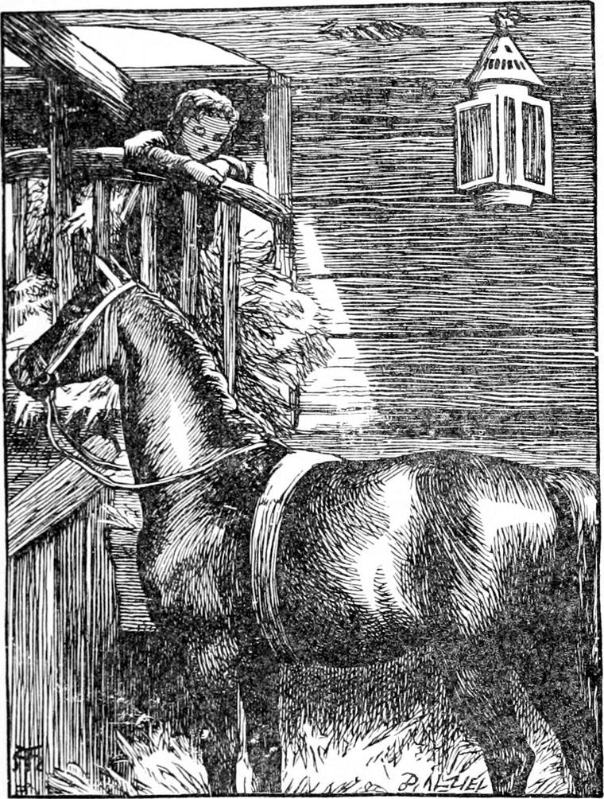
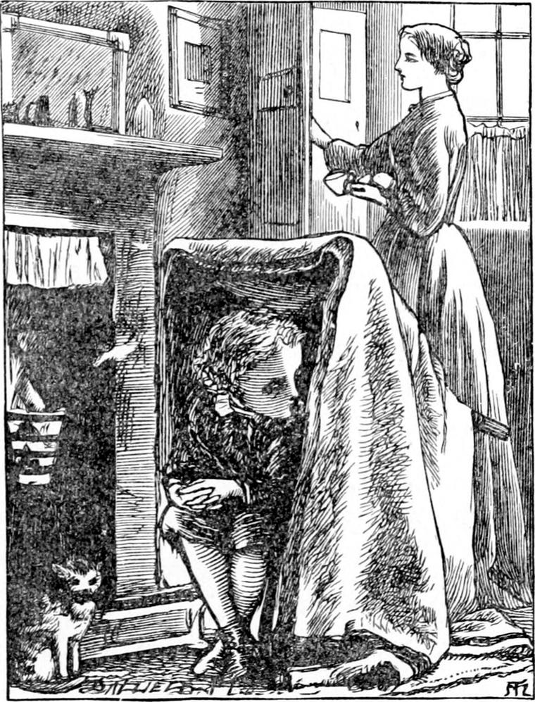
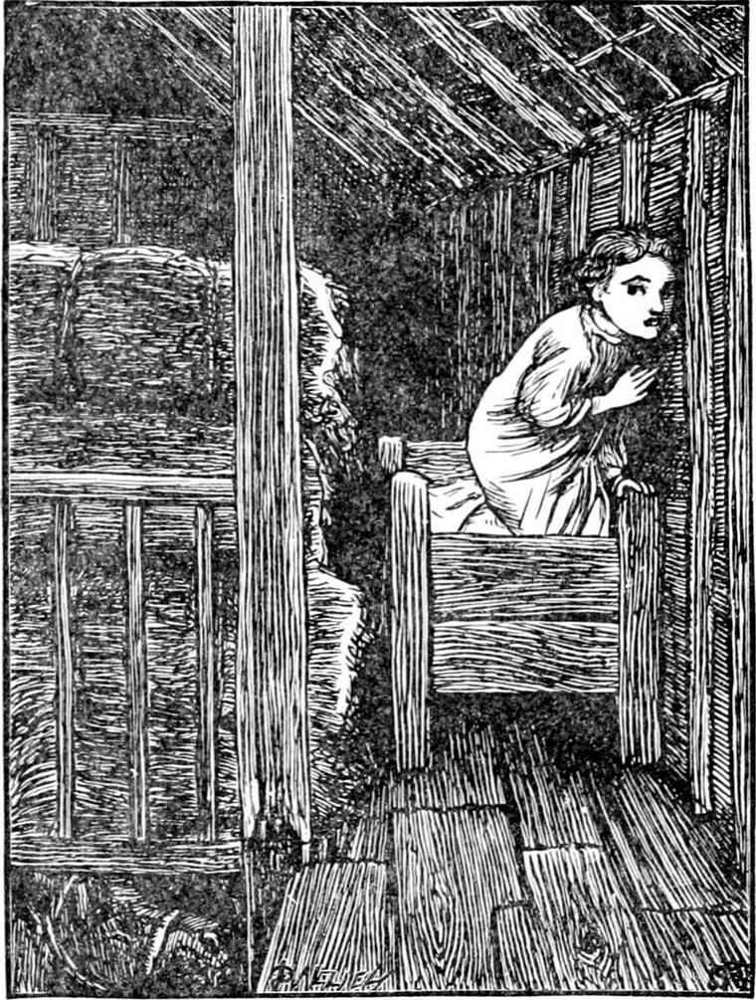
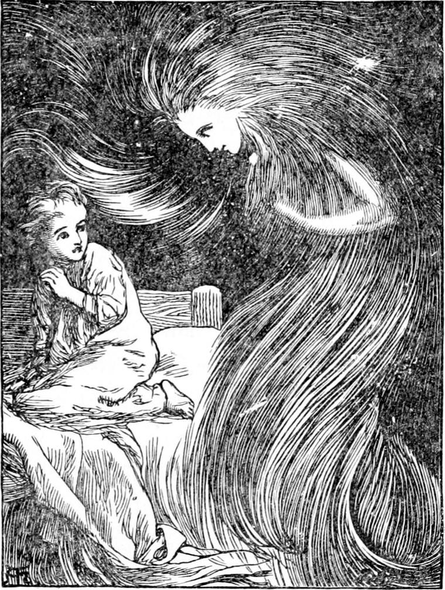

I HAVE been asked to tell you about the back of the north wind. An old Greek writer mentions a people who lived there, and were so comfortable that they could not bear it any longer, and drowned themselves. My story is not the same as his. I do not think Herodotus had got the right account of the place. I am going to tell you how it fared with a boy who went there.
He lived in a low room over a coach-house; and that was not by any means at the back of the north wind, as his mother very well knew. For one side of the room was built only of boards, and the boards were so old that you might run a penknife through into the north wind. And then let them settle between them which was the sharper! I know that when you pulled it out again the wind would be after it like a cat after a mouse, and you would know soon enough you were not at the back of the north wind. Still, this room was not very cold, except when the north wind blew stronger than usual: the room I have to do with now was always cold, except in summer, when the sun took the matter into his own hands. Indeed, I am not sure whether I ought to call it a room at all; for it was just a loft where they kept hay and straw and oats for the horses.
And when little Diamond—but stop: I must tell you that his father, who was a coachman, had named him after a favourite horse, and his mother had had no objection:—when little Diamond, then, lay there in bed, he could hear the horses under him munching away in the dark, or moving sleepily in their dreams. For Diamond's father had built him a bed in the loft with boards all round it, because they had so little room in their own end over the coach-house; and Diamond's father put old Diamond in the stall under the bed, because he was a quiet horse, and did not go to sleep standing, but lay down like a reasonable creature. But, although he was a surprisingly reasonable creature, yet, when young Diamond woke in the middle of the night, and felt the bed shaking in the blasts of the north wind, he could not help wondering whether, if the wind should blow the house down, and he were to fall through into the manger, old Diamond mightn't eat him up before he knew him in his night-gown. And although old Diamond was very quiet all night long, yet when he woke he got up like an earthquake, and then young Diamond knew what o'clock it was, or at least what was to be done next, which was—to go to sleep again as fast as he could.

There was hay at his feet and hay at his head, piled up in great trusses to the very roof. Indeed it was sometimes only through a little lane with several turnings, which looked as if it had been sawn out for him, that he could reach his bed at all. For the stock of hay was, of course, always in a state either of slow ebb or of sudden flow. Sometimes the whole space of the loft, with the little panes in the roof for the stars to look in, would lie open before his open eyes as he lay in bed; sometimes a yellow wall of sweet-smelling fibres closed up his view at the distance of half a yard. Sometimes, when his mother had undressed him in her room, and told him to trot to bed by himself, he would creep into the heart of the hay, and lie there thinking how cold it was outside in the wind, and how warm it was inside there in his bed, and how he could go to it when he pleased, only he wouldn't just yet; he would get a little colder first. And ever as he grew colder, his bed would grow warmer, till at last he would scramble out of the hay, shoot like an arrow into his bed, cover himself up, and snuggle down, thinking what a happy boy he was. He had not the least idea that the wind got in at a chink in the wall, and blew about him all night. For the back of his bed was only of boards an inch thick, and on the other side of them was the north wind.
Now, as I have already said, these boards were soft and crumbly. To be sure, they were tarred on the outside, yet in many places they were more like tinder than timber. Hence it happened that the soft part having worn away from about it, little Diamond found one night, after he lay down, that a knot had come out of one of them, and that the wind was blowing in upon him in a cold and rather imperious fashion. Now he had no fancy for leaving things wrong that might be set right; so he jumped out of bed again, got a little strike of hay, twisted it up, folded it in the middle, and, having thus made it into a cork, stuck it into the hole in the wall. But the wind began to blow loud and angrily, and, as Diamond was falling asleep, out blew his cork and hit him on the nose, just hard enough to wake him up quite, and let him hear the wind whistling shrill in the hole. He searched for his hay-cork, found it, stuck it in harder, and was just dropping off once more, when, pop! with an angry whistle behind it, the cork struck him again, this time on the cheek. Up he rose once more, made a fresh stopple of hay, and corked the hole severely. But he was hardly down again before—pop! it came on his forehead. He gave it up, drew the clothes above his head, and was soon fast asleep.
Although the next day was very stormy, Diamond forgot all about the hole, for he was busy making a cave by the side of his mother's fire with a broken chair, a three-legged stool, and a blanket, and then sitting in it. His mother, however, discovered it, and pasted a bit of brown paper over it, so that, when Diamond had snuggled down the next night, he had no occasion to think of it.

Presently, however, he lifted his head and listened. Who could that be talking to him? The wind was rising again, and getting very loud, and full of rushes and whistles. He was sure some one was talking—and very near him, too, it was. But he was not frightened, for he had not yet learned how to be; so he sat up and hearkened. At last the voice, which, though quite gentle, sounded a little angry, appeared to come from the back of the bed. He crept nearer to it, and laid his ear against the wall. Then he heard nothing but the wind, which sounded very loud indeed. The moment, however, that he moved his head from the wall, he heard the voice again, close to his ear. He felt about with his hand, and came upon the piece of paper his mother had pasted over the hole. Against this he laid his ear, and then he heard the voice quite distinctly. There was, in fact, a little corner of the paper loose, and through that, as from a mouth in the wall, the voice came.
“What do you mean, little boy—closing up my window?”
“What window?” asked Diamond.
“You stuffed hay into it three times last night. I had to blow it out again three times.”
“You can't mean this little hole! It isn't a window; it's a hole in my bed.”
“I did not say it was a window: I said it was my window.”
“But it can't be a window, because windows are holes to see out of.”
“Well, that's just what I made this window for.”
“But you are outside: you can't want a window.”
“You are quite mistaken. Windows are to see out of, you say. Well, I'm in my house, and I want windows to see out of it.”
“But you've made a window into my bed.”
“Well, your mother has got three windows into my dancing room, and you have three into my garret.”
“But I heard father say, when my mother wanted him to make a window through the wall, that it was against the law, for it would look into Mr. Dyves's garden.”
The voice laughed.
“The law would have some trouble to catch me!” it said.
“But if it's not right, you know,” said Diamond, “that's no matter. You shouldn't do it.”
“I am so tall I am above that law,” said the voice.

“You must have a tall house, then,” said Diamond.
“Yes; a tall house: the clouds are inside it.”
“Dear me!” said Diamond, and thought a minute. “I think, then, you can hardly expect me to keep a window in my bed for you. Why don't you make a window into Mr. Dyves's bed?”
“Nobody makes a window into an ash-pit,” said the voice, rather sadly. “I like to see nice things out of my windows.”
“But he must have a nicer bed than I have, though mine is very nice—so nice that I couldn't wish a better.”
“It's not the bed I care about: it's what is in it.—But you just open that window.”
“Well, mother says I shouldn't be disobliging; but it's rather hard. You see the north wind will blow right in my face if I do.”
“I am the North Wind.”
“O-o-oh!” said Diamond, thoughtfully. “Then will you promise not to blow on my face if I open your window?”
“I can't promise that.”
“But you'll give me the toothache. Mother's got it already.”
“But what's to become of me without a window?”
“I'm sure I don't know. All I say is, it will be worse for me than for you.”
“No; it will not. You shall not be the worse for it—I promise you that. You will be much the better for it. Just you believe what I say, and do as I tell you.”
“Well, I can pull the clothes over my head,” said Diamond, and feeling with his little sharp nails, he got hold of the open edge of the paper and tore it off at once.
In came a long whistling spear of cold, and struck his little naked chest. He scrambled and tumbled in under the bedclothes, and covered himself up: there was no paper now between him and the voice, and he felt a little—not frightened exactly—I told you he had not learned that yet—but rather queer; for what a strange person this North Wind must be that lived in the great house—“called Out-of-Doors, I suppose,” thought Diamond—and made windows into people's beds! But the voice began again; and he could hear it quite plainly, even with his head under the bed-clothes. It was a still more gentle voice now, although six times as large and loud as it had been, and he thought it sounded a little like his mother's.
“What is your name, little boy?” it asked.
“Diamond,” answered Diamond, under the bed-clothes.
“What a funny name!”
“It's a very nice name,” returned its owner.
“I don't know that,” said the voice.
“Well, I do,” retorted Diamond, a little rudely.
“Do you know to whom you are speaking!”
“No,” said Diamond.
And indeed he did not. For to know a person's name is not always to know the person's self.
“Then I must not be angry with you.—You had better look and see, though.”
“Diamond is a very pretty name,” persisted the boy, vexed that it should not give satisfaction.
“Diamond is a useless thing rather,” said the voice.
“That's not true. Diamond is very nice—as big as two—and so quiet all night! And doesn't he make a jolly row in the morning, getting upon his four great legs! It's like thunder.”
“You don't seem to know what a diamond is.”
“Oh, don't I just! Diamond is a great and good horse; and he sleeps right under me. He is old Diamond, and I am young Diamond; or, if you like it better, for you're very particular, Mr. North Wind, he's big Diamond, and I'm little Diamond; and I don't know which of us my father likes best.”
A beautiful laugh, large but very soft and musical, sounded somewhere beside him, but Diamond kept his head under the clothes.
“I'm not Mr. North Wind,” said the voice.
“You told me that you were the North Wind,” insisted Diamond.
“I did not say Mister North Wind,” said the voice.
“Well, then, I do; for mother tells me I ought to be polite.”
“Then let me tell you I don't think it at all polite of you to say Mister to me.”
“Well, I didn't know better. I'm very sorry.”
“But you ought to know better.”
“I don't know that.”
“I do. You can't say it's polite to lie there talking—with your head under the bed-clothes, and never look up to see what kind of person you are talking to.—I want you to come out with me.”
“I want to go to sleep,” said Diamond, very nearly crying, for he did not like to be scolded, even when he deserved it.
“You shall sleep all the better to-morrow night.”
“Besides,” said Diamond, “you are out in Mr. Dyves's garden, and I can't get there. I can only get into our own yard.”
“Will you take your head out of the bed-clothes?” said the voice, just a little angrily.
“No!” answered Diamond, half peevish, half frightened.
The instant he said the word, a tremendous blast of wind crashed in a board of the wall, and swept the clothes off Diamond. He started up in terror. Leaning over him was the large, beautiful, pale face of a woman. Her dark eyes looked a little angry, for they had just begun to flash; but a quivering in her sweet upper lip made her look as if she were going to cry. What was the most strange was that away from her head streamed out her black hair in every direction, so that the darkness in the hay-loft looked as if it were made of her hair; but as Diamond gazed at her in speechless amazement, mingled with confidence—for the boy was entranced with her mighty beauty—her hair began to gather itself out of the darkness, and fell down all about her again, till her face looked out of the midst of it like a moon out of a cloud. From her eyes came all the light by which Diamond saw her face and her hair; and that was all he did see of her yet. The wind was over and gone.

“Will you go with me now, you little Diamond? I am sorry I was forced to be so rough with you,” said the lady.
“I will; yes, I will,” answered Diamond, holding out both his arms. “But,” he added, dropping them, “how shall I get my clothes? They are in mother's room, and the door is locked.”
“Oh, never mind your clothes. You will not be cold. I shall take care of that. Nobody is cold with the north wind.”
“I thought everybody was,” said Diamond.
“That is a great mistake. Most people make it, however. They are cold because they are not with the north wind, but without it.”
If Diamond had been a little older, and had supposed himself a good deal wiser, he would have thought the lady was joking. But he was not older, and did not fancy himself wiser, and therefore understood her well enough. Again he stretched out his arms. The lady's face drew back a little.
“Follow me, Diamond,” she said.
“Yes,” said Diamond, only a little ruefully.
“You're not afraid?” said the North Wind.
“No, ma'am; but mother never would let me go without shoes: she never said anything about clothes, so I dare say she wouldn't mind that.”
“I know your mother very well,” said the lady. “She is a good woman. I have visited her often. I was with her when you were born. I saw her laugh and cry both at once. I love your mother, Diamond.”
“How was it you did not know my name, then, ma'am? Please am I to say ma'am to you, ma'am?”
“One question at a time, dear boy. I knew your name quite well, but I wanted to hear what you would say for it. Don't you remember that day when the man was finding fault with your name—how I blew the window in?”
“Yes, yes,” answered Diamond, eagerly. “Our window opens like a door, right over the coach-house door. And the wind—you, ma'am—came in, and blew the Bible out of the man's hands, and the leaves went all flutter, flutter on the floor, and my mother picked it up and gave it back to him open, and there——”
“Was your name in the Bible—the sixth stone in the high priest's breastplate.”
“Oh!—a stone, was it?” said Diamond. “I thought it had been a horse—I did.”
“Never mind. A horse is better than a stone any day. Well, you see, I know all about you and your mother.”
“Yes. I will go with you.”
“Now for the next question: you're not to call me ma'am. You must call me just my own name—respectfully, you know—just North Wind.”
“Well, please, North Wind, you are so beautiful, I am quite ready to go with you.”
“You must not be ready to go with everything beautiful all at once, Diamond.”
“But what's beautiful can't be bad. You're not bad, North Wind?”
“No; I'm not bad. But sometimes beautiful things grow bad by doing bad, and it takes some time for their badness to spoil their beauty. So little boys may be mistaken if they go after things because they are beautiful.”
“Well, I will go with you because you are beautiful and good, too.”
“Ah, but there's another thing, Diamond:—What if I should look ugly without being bad—look ugly myself because I am making ugly things beautiful?—What then?”
“I don't quite understand you, North Wind. You tell me what then.”
“Well, I will tell you. If you see me with my face all black, don't be frightened. If you see me flapping wings like a bat's, as big as the whole sky, don't be frightened. If you hear me raging ten times worse than Mrs. Bill, the blacksmith's wife—even if you see me looking in at people's windows like Mrs. Eve Dropper, the gardener's wife—you must believe that I am doing my work. Nay, Diamond, if I change into a serpent or a tiger, you must not let go your hold of me, for my hand will never change in yours if you keep a good hold. If you keep a hold, you will know who I am all the time, even when you look at me and can't see me the least like the North Wind. I may look something very awful. Do you understand?”
“Quite well,” said little Diamond.
“Come along, then,” said North Wind, and disappeared behind the mountain of hay.
Diamond crept out of bed and followed her.